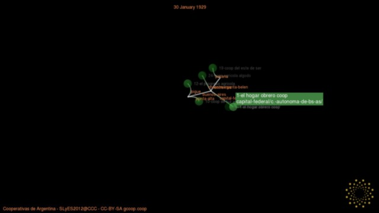
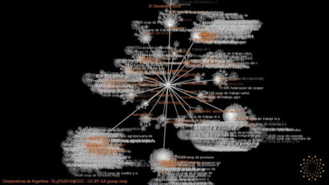
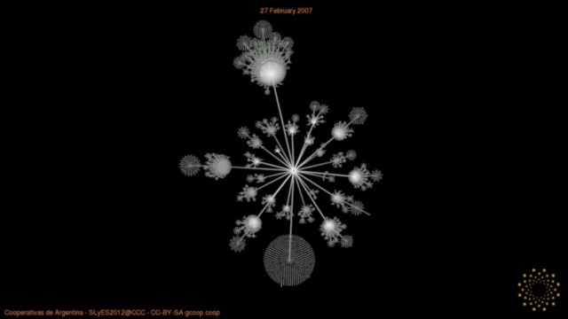

Visualizando Cooperativas de Argentina
index | OSiUX | blog | docs | charlas | rss
Convirtiendo un CSV en un gráfico animado

Ayer fue el evento Software Libre y Economía Social 1 y desde las 12hs se armó un hackaton donde la premisa era mostrar los números del cooperativismo en Argentina.
Partiendo del listado del INAES 2 se armó un repositorio CoopViz en github 3 donde se publicarán las distintas propuestas para visualizar gráficamente los datos de modo que se pueda captar la atención sobre la gran cantidad de cooperativas que existen en el país desde el año 1927 al 2008.
Yo estuve trabajando con la herramienta Gource 4 desarrollada por Andrew Caudwell 5 que originalmente está pensada para visualizar la actividad de un repositorio de control de versiones como el del kernel de linux 6
El primer paso fue convertir el CSV del listado del INAES a un
archivo compatible con Gource. Básicamente leo el CSV y por cada
línea aplico algunas conversiones, la más importante fue convertir el
formato de fecha DD/MM/YYYY al UNIX Timestamp 7
y en función de el tipo de cooperativa elegir un color distinto.
El script csv2log.sh:
cat ../datos/coops.csv | tr " " "-" | sed s/"--"/"-"/g | tr -d '"' | while read LINE do DATE=$(echo "$LINE" | awk '{print $1}' FS=',' | tr "/" " " | awk '{print $3"-"$2"-"$1}') # echo $DATE TIME=$(date -d "$DATE 00:00:00" "+%s") #echo $TIME USER="coop" STATUS="A" PAGE="" PROV=$(echo $LINE | awk '{print $2}' FS=',' | tr A-Z a-z) LOCA=$(echo $LINE | awk '{print $3}' FS=',' | tr A-Z a-z) TIPO=$(echo $LINE | awk '{print $4}' FS=',') T=$(echo $TIPO | tr -d '"' | tr "-" " " | awk '{print $1}') COLOR=$(grep $T tipos-basicos | head -1 | awk '{print $1}') NRO=$(echo $LINE | awk '{print $5}' FS=',') NOMBRE=$(echo $LINE | awk '{print $6}' FS=',' | tr "-" " " | tr A-Z a-z | cut -c -20) echo $TIME"|"$TIPO"|"$STATUS"|"$PROV"/"$LOCA"/"$NRO"-"$NOMBRE"|"$COLOR done | sort -n | tee gource.log
La estructura el grafo es Provincia/Localidad/Matrícula-Cooperativa,
ya que los nombres son muy largos, opté por limitarlos a 20 caracteres.
Con el archivo gource.log ya creado, la animación se genera mediante
el script gource.sh que establece los parámetros de visualización.
cat gource.log | gource - --log-format custom \ --selection-colour FF0000 \ --stop-at-end \ -w -f -b 000000 --camera-mode track -s 1 -720x480 \ --date-format '%d %B %Y' \ --hide 'bloom,filenames,dirnames,mouse,root,tree,users,usernames' \ --max-files 0 --seconds-per-day 0.001 \ --dir-colour 4E90FE \ --title "Cooperativas de Argentina - SLyES2012@CCC - CC-BY-SA gcoop.coop" \ --font-size 16 --font-colour 4E90FE \ --logo puntitos.png --max-file-lag -1 \ --default-user-image '/home/osiris/data/dev/CoopViz/datos/colores/default.png' \ --user-image-dir '/home/osiris/data/dev/CoopViz/datos/colores/'
Al finalizar el evento pude mostar mediante un proyector cómo el cooperativismo existe en cada una de las provincias desde hace años, más de 23 mil cooperativas en 80 años, es todo un universo que día a día crece y genera nuevos vínculos y relaciones que se transforman en federaciones y confederaciones como es FACTTIC 8 que fue presentada ayer.
Año 1929

Año 2000

Año 2007

Video Cooperativas de Argentina 1927-2008
Hoy con algo más de tiempo, armé un video y lo liberé!
Changelog
- mejoro bloques de código y agrego tamaños a imágenes